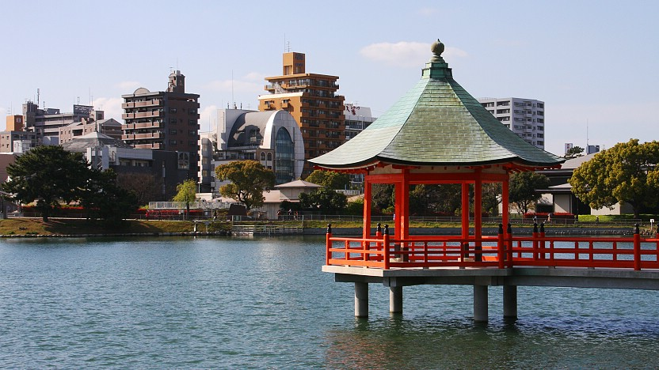
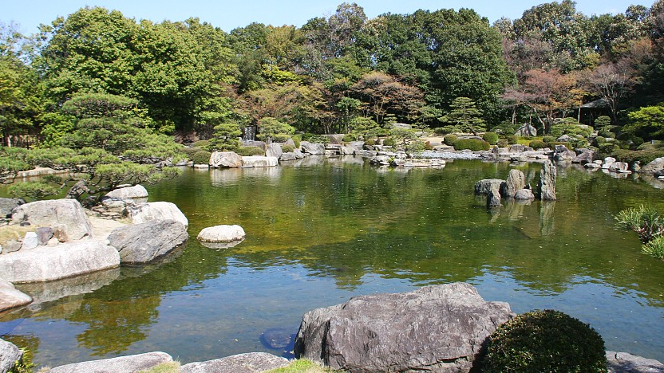

Ohori Park
大濠公園
Ohori Park (大濠公園, Ōhori-kōen) is a pleasant park in central Fukuoka with a large pond at its center. There is a walking path around the circumference of the pond that is just a little over two kilometers long and is popular for jogging, walking pets and leisurely strolls by the water.
Ohori is Japanese for moat, and the park's pond once served as part of the moat system of the neighboring Fukuoka Castle. The park was constructed between 1926 and 1929 and designed after the classical garden style of the West Lake in China. There are three islands in the middle of the pond that are connected to the mainland and each other by elegant stone bridges.
Directly adjacent to the pond at its southeastern corner is the Fukuoka Art Museum. Opened in 1979, it has a permanent collection that includes Buddhist statues dating back to the 11th century and paintings and sculptures by modern artists like Miro and Dali. Besides the permanent collection, the museum also holds a variety of special temporary exhibitions.
A few steps south of the museum visitors will come across the Ohori Park Japanese Garden which - in contrast to the rest of the park - requires a small entrance fee. Here visitors can see typical features of Japanese gardens like dry landscapes and tea houses. The Gokoku Shrine is located across the street about 150 meters to the southeast. The path to the shrine leads under a massive torii gate and the main shrine building is a unique gold structure situated in front of a spacious yard.
